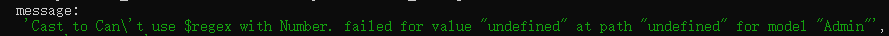
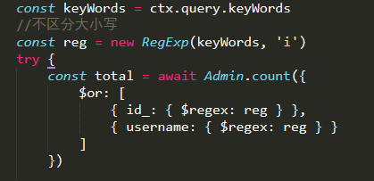
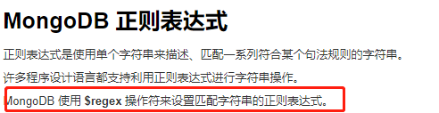
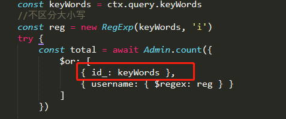

注：nodejs服务器时候遇到了这样一个bug,就是mongoose模糊查询时候，我需要查询的数据时自定义id_(number类型)以及用户名(string类型)。
bug如下：
nodejs服务器报的下面这个错误

翻译：转换为不能使用带有数字的$regex。值“undefined”在路径“undefined”上失败，值“Admin”在模型“Admin”上失败。
查询数据的代码如下：

解决思路：
去查询了资料，了解如下

上图数据来自：https://www.runoob.com/mongodb/mongodb-regular-expression.html
原来$regex只能匹配字符串类型，但是我上面的查询的id_是number类型,所以报了这个错，
所以修改如下：

id_这项直接查询传过来的数据就可以。
就这样完美解决了。